4º Laboratório de Modelação e Simulação 2019/20
Detecção de hotspots WiFi
Alice Rosa, Nº 90007
Beatriz Pereira, Nº 90029
Grupo 16, Turno 3ª feira às 9h00
Contents
Questão 2.a)
Nesta questão, decompôs-se a matriz transposta de probabilidades de transição entre estados, P', em valores próprios e vetores próprios. De seguida, obteve-se a distribuição de equilíbrio da cadeia de Markov por normalização do vetor próprio associado ao valor próprio mais próximo de 1.
clear; close all; load('MarkovChain.mat'); %valores e vetores próprios da matriz P' [vect, val]= eig(P'); %Determinar o valor próprio mais próximo de 1 min= 900; for i=1:length(val) if(abs(val(i,i)-1))<min min=abs(val(i,i)-1); ind=i; end end % Associar o vetor próprio a esse índice Vp= vect(:,ind); % normalização do vetor próprio soma_Vp= sum(Vp); Vp_normalizado = Vp/soma_Vp; %soma das probabilidades tem de ser igual a 1 Vp_normalizado_total = sum(Vp_normalizado); %distribuição de equilibro da cadeia de Markov bar(Vp_normalizado); xlabel('Estados'); xlim([0 21]); ylabel('Probabilidade de estado'); title('Distribuição de equilíbrio da cadeia de Markov'); set(gca,'Fontsize',12);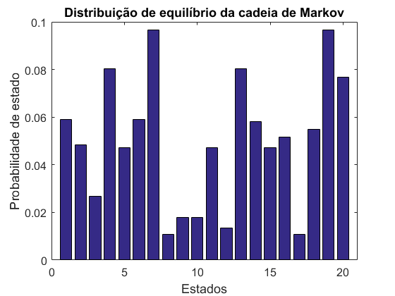
Por análise do gráfico da distribuição de equilíbrio da cadeira de Markov, conclui-se que os estados mais prováveis são o 7 e o 19 (P=0.09649), sendo que estes correspondem, também, aos nós do grafo com maior número de ligações e os estados menos prováveis são o 8 e 17 (P=0.01072).
Questão 2.b)
Tendo em conta a distribuição de equilíbrio da cadeia de Markov da alínea anterior, resolveu-se uma versão ponderada do problema de mínimos quadráticos, para um M suficientemente longo de medições arbitrário, de modo a determinar a posição da fonte estimada.
Po=100; %Potência da fonte variancia=10^-2; M=1000; %Número de medições a=[nodePos(:,2),nodePos(:,3)]'; D=squareform(pdist([sourcePos' zeros(size(sourcePos')) a]')); d=D(1,3:end); %Fonte-âncora distância % Posição estimada da fonte x=sourcePos_estimativa(M,Po,variancia,Vp_normalizado,a,d); % Plot figure(2) plot(nodePos(:,2),nodePos(:,3),'o'); hold on plot(sourcePos(:,1),sourcePos(:,2),'x'); plot(x(:,1),x(:,2),'s'); hold on axis(100*[0 1 0 1]); axis('square') legend( {'Âncoras','Fonte', 'Posição estimada da fonte'},'Location','southwest' ); title('Posição da fonte e das âncoras'); % Função que estima a posição da fonte type ('sourcePos_estimativa');
function x=sourcePos_estimativa(M,Po,variancia,Vp,a,d)
% Inicialização das matrizes A, b e Pi
A=zeros(M,4);
b=zeros(M,1);
Pi=zeros(M,1);
token_anc=round(Vp.*M); % Número de vezes que o token passa por cada âncora
% calcula-se a diferença entre o número de total de medições e o número de
% medições definido. Se a diferença for negativa, soma-se o módulo ao
% número de medições da última âncora. Se for positiva, substrai-se.
dif=sum(token_anc)-M;
if dif<0
token_anc(20)=token_anc(20)+abs(dif);
elseif dif>0
token_anc(20)=token_anc(20)-dif;
end
n=randn(M,1)*sqrt(variancia); % distribuição gaussiana do ruído
j=1;
for i=1:20
contagem=token_anc(i); % Contagem do número total de medições para cada âncora
while contagem>0 % Contagem decrescente
Pi(j)=(Po/(d(i))^2)*exp(n(j)); %Potência na observação j
%construção das matrizes A e b
A(j,1)=-2*Pi(j)*a(1,i);
A(j,2)=-2*Pi(j)*a(2,i);
A(j,3)=-1;
A(j,4)=Pi(j);
b(j)=-Pi(j)*(norm(a(1:2,i)))^2;
contagem=contagem-1;
j=j+1;
end
end
rls_Par=struct('lam',1);
[~,w,~]=qrrls(A,b,rls_Par); % Retorna o vector de coeficientes do filtro transversal convencional, w
x=[w(1) w(2)]; %estimativa posição da fonte
end
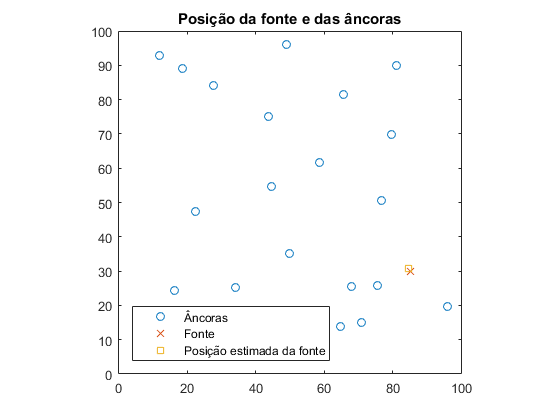 Conclui-se que, para um número elevado de medições, o método dos mínimos quadrados fornece uma boa estimativa para a posição da fonte, sendo que o pequeno desvio apresentado deve-se à presença de ruído.
Questão 2.c)
Fez-se a simulação da evolução das probabilidades dos diversos estados da cadeia de Markov, ao longo do tempo, para diferentes condições iniciais de 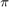(0).
A evolução das probabilidades dos estados de uma cadeia de Markov, entre dois instantes de tempo consecutivos, é dada por 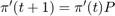.
clearvars -except Vp_normalizado; close all; load('MarkovChain.mat'); % --- 1ª Condição Inicial --- t=1:200; pi_0=zeros(1,20)'; % Inicialização no estado 7 pi_0(7)=1; pi_t1=pi_0; %soma de todas as entradas do vetor pi soma_pi_1(1)=sum(pi_t1); % evolução das probabilidades dos estados de uma cadeia de Markov for i=1:199 pi_t1(:,i+1)=pi_0'*(P^(i)); soma_pi_1(i+1)=sum(pi_t1(:,i+1)); end estados=repmat(1:20,length(t),1); figure(1) plot3(t,estados,pi_t1); xlabel('Tempo (t)'); ylabel('Estados'); zlabel('Probabilidade de cada estado'); title('Condição inicial no centro do grafo'); set(gca,'Fontsize',12); figure(2) plot(t,soma_pi_1); ylim([0.95 1.05]); xlabel('Tempo (t)'); ylabel('Soma das probabilidades'); title('Soma das entradas \pi(t)'); set(gca,'Fontsize',12); % --- 2ª Condição Inicial --- pi_0=zeros(1,20)'; % Inicialização no estado 17 pi_0(17)=1; pi_t2=pi_0; soma_pi_2(1)=sum(pi_t2); %soma das probabilidades % evolução das probabilidades dos estados de uma cadeia de Markov for i=1:199 pi_t2(:,i+1)=pi_0'*(P^(i)); soma_pi_2(i+1)=sum(pi_t2(:,i+1)); end estados=repmat(1:20,length(t),1); figure(3) plot3(t,estados,pi_t2); xlabel('Tempo (t)'); ylabel('Estados'); zlabel('Probabilidade de cada estado'); title('Condição inicial num estado que retém o token'); set(gca,'Fontsize',12); figure(4) plot(t,soma_pi_2); ylim([0.95 1.05]); xlabel('Tempo (t)'); ylabel('Soma das probabilidades'); title('Soma das entradas \pi(t)'); set(gca,'Fontsize',12); % --- 3ª Condição Inicial --- pi_0=zeros(1,20)'; %distribuição inicial uniforme pi_0(:,1)=1/20; pi_t3=pi_0; soma_pi_3(1)=sum(pi_t3); %soma das probabilidades % evolução das probabilidades dos estados de uma cadeia de Markov for i=1:199 pi_t3(:,i+1)=pi_0'*(P^(i)); soma_pi_3(i+1)=sum(pi_t3(:,i+1)); end estados=repmat(1:20,length(t),1); figure(5) plot3(t,estados,pi_t3); xlabel('Tempo (t)'); ylabel('Estados'); zlabel('Probabilidade de cada estado'); title('Distribuição inicial uniforme'); set(gca,'Fontsize',12); figure(6) plot(t,soma_pi_3); ylim([0.95 1.05]); xlabel('Tempo (t)'); ylabel('Soma das probabilidades'); title('Soma das entradas \pi(t)'); set(gca,'Fontsize',12); % --- 4ª Condição Inicial --- %distribuição inicial em equilibrio pi_0= Vp_normalizado; pi_t4=pi_0; soma_pi_4(1)=sum(pi_t4); %soma das probabilidades for i=1:199 pi_t4(:,i+1)=pi_0'*(P^(i)); soma_pi_4(i+1)=sum(pi_t4(:,i+1)); end estados=repmat(1:20,length(t),1); figure(7) plot3(t,estados,pi_t4); xlabel('Tempo (t)'); ylabel('Estados'); zlabel('Probabilidade de cada estado'); title('Distribuição inicial em equilíbrio'); set(gca,'Fontsize',12); figure(8) plot(t,soma_pi_4); ylim([0.95 1.05]); xlabel('Tempo (t)'); ylabel('Soma das probabilidades'); title('Soma das entradas \pi(t)'); set(gca,'Fontsize',12);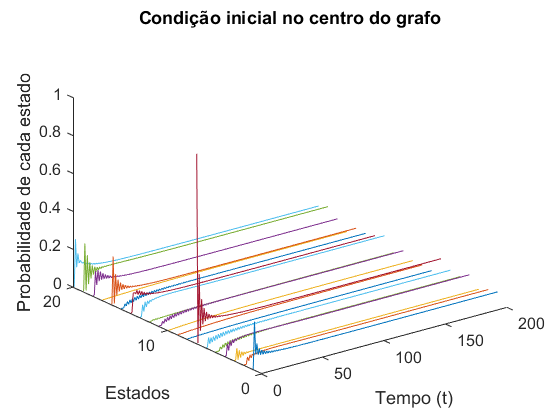 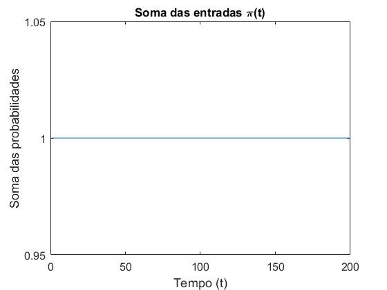 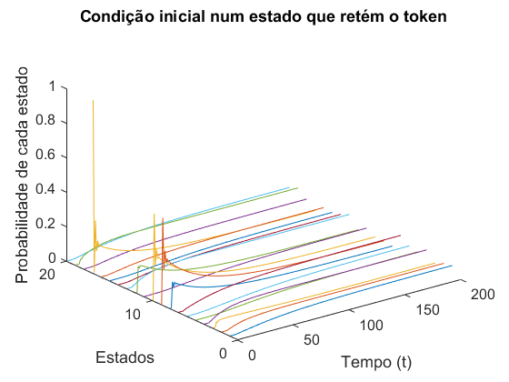 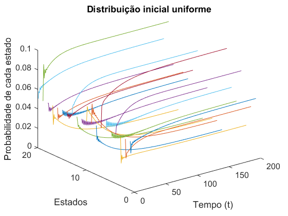 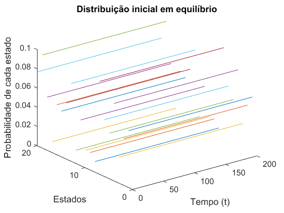
Simulou-se a evolução das probabilidades dos diversos estados da cadeia de Markov, ao longo do tempo, para quatro condições iniciais diferentes de 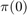.
Em primeiro lugar, incializou-se o token na âncora 7, pois esta é uma âncora central do grafo com quatro ligações todas com igual probabilidade (P=0.25). Verifica-se que as probabilidades de todos os estados tendem para o equilíbrio.
De seguida, inicializou-se o token num dos subconjuntos em que este fica retido durante um longo período de tempo por ter menos probabilidade de sair do que ficar, portanto escolheu-se a âncora 17, que corresponde, também, a um dos estados com menor probabilidade. Uma vez que se inicializa o token dentro deste subconjunto e este só têm 20% probabilidade de sair, verifica-se, por observação do gráfico, que o tempo de estabelecimento é superior ao caso anterior, isto é, as probabilidades dos estados demoram mais tempo a atingir o equilíbrio.
Como terceiro caso, escolheu-se um vetor de probabilidades com distribuição inicial uniforme. Daqui, uma vez que o token tem a mesma probabilidade de começar em qualquer uma das âncoras, este corresponde ao caso médio dos dois anteriores.
Por último, escolheu-se um vetor de probabilidades com distribuição inicial em equilibrio, em que este é igual ao vetor de vetores próprios correspondente à distribuição de equilíbro da cadeia de Markov (decomposição em valores e vetores próprios). Uma vez que o sistema se mantém nesse estado indefinidamente, comprova-se que a distribuição do sistema tende sempre para a posição de equilíbrio.
Questão 2.d)
clear; close all; MarkovChainDraw title('Grafo de comunicações entre os agentes');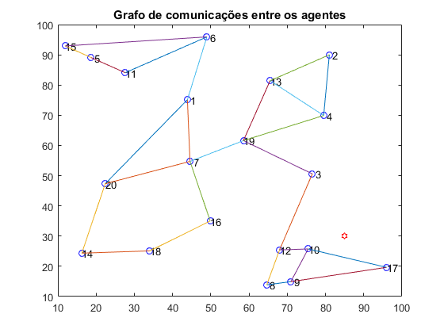
Através da análise do grafo de comunicações entre agentes, das respetivas probabilidades de transição entre os vários estados e da distribuição de equilíbrio, identificaram-se dois subconjuntos de estados da cadeia onde o token pode ficar a circular durante relativamente longos intervalos de tempo.
Subconjunto 1: 5, 6, 11, 15.
Subconjunto 2: 8, 9, 10, 12, 17.
O token tem tendência a ficar preso nestes subconjuntos durante períodos mais longos, pois em ambos os casos só há uma forma de saída e esta apresenta uma probabilidade inferiror às ligações de entrada. O subconjunto 1, apresenta uma probabilidade de sair de 20%, apenas a partir do nó 6, enquanto a probabilidade de se manter é de 80%. O mesmo acontece no subconjunto 2, em o token apresenta 20% de probabilidade de sair pelo nó 12 e 80% de ficar e se deslocar para o nó 8 ou 10.
Tal como se verificou na alínea anterior, se o token for inicializado num destes subconjuntos ou entrar num deles, irá tender para o equilíbrio, mas o seu tempo de convergência será maior.
Questão 2.d) Ponto de vista da equipa
Para melhorar a eficácia de circulação global do token e evitar que este fique preso nestes subconjuntos, procedeu-se à alteração dos pesos dos nós 1, 3, 4, 6, 10, 12, 13, 15, 16 e 20 e adicionaram-se ligações estratégicas entre os nós 3 e 16, 15 e 20, 13 e 1.
close all clear load('MarkovChain.mat'); % Alteração dos pesos dos nós na matriz P P(6,1)=0.3; P(6,11)=0.45; P(6,15)=0.25; %Nó 6 P(15,20)=0.25; P(15,5)=0.40; P(15,6)=0.35; %Nó 15 P(1,6)=0.20; P(1,20)=0.25; P(1,7)=0.25; P(1,13)=0.30; %Nó 1 P(3,12)=0.4; P(3,19)=0.3; P(3,16)=0.3; %Nó 3 P(12,3)=0.30; P(12,10)=0.25; P(12,8)=0.45; %Nó 12 P(4,19)=0.4; P(4,13)=0.15; P(4,2)=0.45; %Nó 4 P(20,15)=0.35; P(20,1)=0.15; P(20,7)=0.15; P(20,14)=0.35; %Nó 20 P(13,1)=0.25; P(13,2)=0.35; P(13,4)=0.15; P(13,19)=0.25; %Nó 13 P(16,3)=0.25; P(16,7)=0.15; P(16,18)=0.6; %Nó 16 P(10,17)=0.45; P(10,12)=0.35; P(10,9)=0.2; %Nó 10 % repetir alínea 2.a) %valores e vetores próprios da matriz P' [vect, val]= eig(P'); %Determinar o valor próprio mais próximo de 1 min= 900; for i=1:length(val) if(abs(val(i,i)-1))<min min=abs(val(i,i)-1); ind=i; end end Vp= vect(:,ind); % normalização soma_Vp= sum(Vp); Vp_normalizado = Vp/soma_Vp; %soma das probabilidades tem de ser igual a 1 Vp_normalizado_total = sum(Vp_normalizado); %distribuição de equilibro da cadeia de Markov bar(Vp_normalizado); xlabel('Estados'); xlim([0 21]); ylabel('Probabilidade de estado'); title('Distribuição de equilíbrio da cadeia de Markov melhorada'); set(gca,'Fontsize',12); %repetir 2.b) Po=100; %Potência da fonte variancia=10^-2; M=1000; %Número de medições a=[nodePos(:,2),nodePos(:,3)]'; D=squareform(pdist([sourcePos' zeros(size(sourcePos')) a]')); d=D(1,3:end); %Fonte-âncora distância % Estimativa da localização da fonte x=sourcePos_estimativa(M,Po,variancia,Vp_normalizado,a,d); % Plot % figure plot(nodePos(:,2),nodePos(:,3),'o'); hold on plot(sourcePos(:,1),sourcePos(:,2),'x'); plot(x(:,1),x(:,2),'s'); hold on axis(100*[0 1 0 1]); axis('square') legend( {'Âncoras','Fonte', 'Posição estimada da fonte'},'Location','southwest' ); title('Posição da fonte e das âncoras com grafo melhorado'); % repetir 2.c) t=1:200; pi_0=zeros(1,20)'; pi_0(7)=1; pi_t1=pi_0; soma_pi_1(1)=sum(pi_t1); for i=1:199 pi_t1(:,i+1)=pi_0'*(P^(i)); soma_pi_1(i+1)=sum(pi_t1(:,i+1)); end estados=repmat(1:20,length(t),1); figure plot3(t,estados,pi_t1); xlabel('Tempo (t)'); ylabel('Estados'); zlabel('Probabilidade de cada estado'); title('Grafo Melhorado'); set(gca,'Fontsize',12);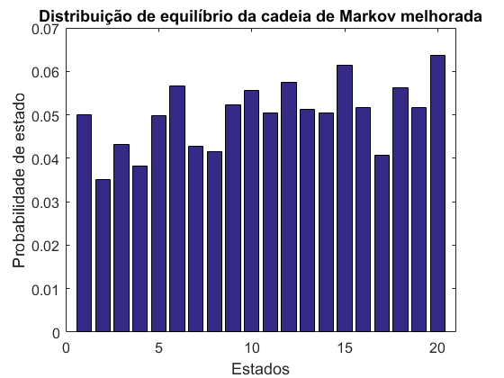 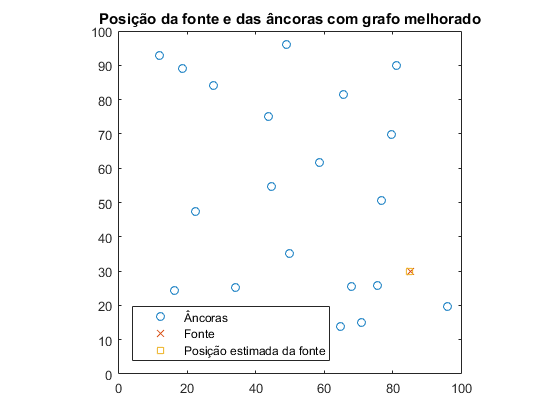 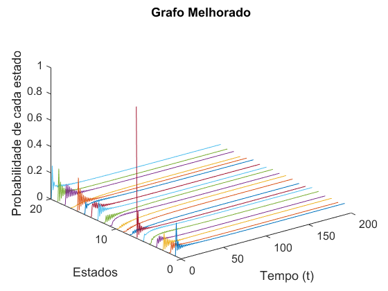
Questão 2.d) Ponto de vista de um elemento hostil
Fizeram-se alterações no peso das ligações dos nós 1 e 6 (jamming selectivo do canal de comunicações), de modo dificultar a circulação do token e aumentar o seu isolamento nos subconjuntos que o retêm durante períodos de tempo mais longos.
close all clear load('MarkovChain.mat'); % Alteração na matriz P P(1,6)=0.8; P(1,20)=0.1; P(1,7)=0.1; P(6,1)=0.1; P(6,11)=0.45; P(6,15)=0.45; % repetir alínea 2.a) %valores e vetores próprios da matriz P' [vect, val]= eig(P'); %Determinar o valor próprio mais próximo de 1 min= 900; for i=1:length(val) if(abs(val(i,i)-1))<min min=abs(val(i,i)-1); ind=i; end end Vp= vect(:,ind); % normalização soma_Vp= sum(Vp); Vp_normalizado = Vp/soma_Vp; %soma das probabilidades tem de ser igual a 1 Vp_normalizado_total = sum(Vp_normalizado); %distribuição de equilibro da cadeia de Markov bar(Vp_normalizado); xlabel('Estados'); xlim([0 21]); ylabel('Probabilidade de estado'); title('Distribuição de equilíbrio da cadeia de Markov hostil'); set(gca,'Fontsize',12); %repetir 2.b) Po=100; %Potência da fonte variancia=10^-2; M=1000; %Número de medições a=[nodePos(:,2),nodePos(:,3)]'; D=squareform(pdist([sourcePos' zeros(size(sourcePos')) a]')); d=D(1,3:end); %Fonte-âncora distância x=sourcePos_estimativa(M,Po,variancia,Vp_normalizado,a,d); % Plot % figure plot(nodePos(:,2),nodePos(:,3),'o'); hold on plot(sourcePos(:,1),sourcePos(:,2),'x'); plot(x(:,1),x(:,2),'s'); hold on axis(100*[0 1 0 1]); axis('square') legend( {'Âncoras','Fonte', 'Posição estimada da fonte'},'Location','southwest' ); title('Posição da fonte e das âncoras com elemento hostil'); % repetir 2.c) t=1:800; pi_0=zeros(1,20)'; pi_0(7)=1; pi_t1=pi_0; soma_pi_1(1)=sum(pi_t1); for i=1:799 pi_t1(:,i+1)=pi_0'*(P^(i)); soma_pi_1(i+1)=sum(pi_t1(:,i+1)); end estados=repmat(1:20,length(t),1); figure plot3(t,estados,pi_t1); xlabel('Tempo (t)'); ylabel('Estados'); zlabel('Probabilidade de cada estado'); title('Grafo hostil'); set(gca,'Fontsize',12);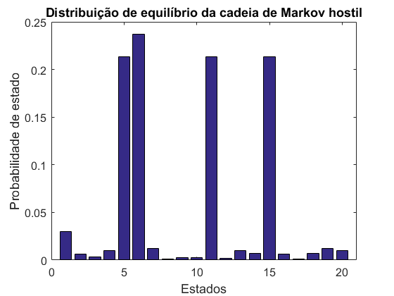 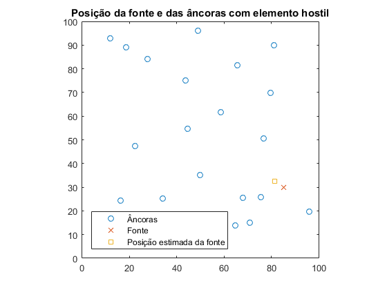 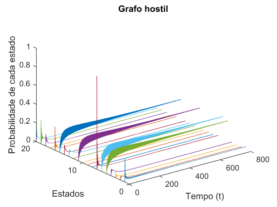
Concluí-se, destas alterações, que a fluidez de circulação do token tem influência directa na precisão de localização da fonte, uma vez que ao adicionar o elemento hostil, o tempo que a distribuição de probabilidades demora a tender para a distribuição de equilíbrio é muito mais elevado em comparação com o do o grafo melhorado e a localização da fonte é muito menos precisa do que quando ocorre uma circulação eficaz do token.
Questão 3.a)
Nesta questão, introduz-se o método de Monte Carlo, onde se simula o avanço do token que parte de um estado inicial e avança aleatoriamente pelo diagrama de estados durante um certo número de instantes de tempo, anotando-se o historial. Este procedimento, designado por run de Monte Carlo é repetido um número suficiente de vezes de forma a assegurar que os resultados têm significado estatístico.
Foi desenvolvida a função 'simulacao_MonteCarlo' de forma a simular-se para um certo número de runs (n_runs) e de passos (n_passos) o avanço do token pelo diagrama de estados e guardar essa informação para futura análise.
type('simulacao_MonteCarlo.m')
function estados_MC= simulacao_MonteCarlo(P,n_runs,n_passos,n_estados,mode,estado_inicial)
%Entradas: P - matriz probabilidade de transição entre estados
% n_estados - número total de estados
% mode - escolha entre uma inicialização sempre no mesmo estado_inicial para
% cada run (modo 'c') ou aletória (uniforme)
%Saídas: matriz que guarda o número total de vezes que o token passou por
% cada antena, por passo.
estados_MC=zeros(n_passos, n_estados);
for i=1:n_runs
if(mode=='c') %verificação do modo
estado_atual=estado_inicial;
else
estado_atual=randi(n_estados,1);
end
for j=1:n_passos
%incrementar a matriz para o passo j e a âncora onde se encontra
estados_MC(j, estado_atual)=estados_MC(j, estado_atual)+1;
%Escolha do estado seguinte
estado_atual=find(cumsum(P(estado_atual,:)) > rand,1,'first');
end
hh=waitbar(i/n_runs);
end
close(hh);
end
clear close all load('MarkovChain.mat') n_runs=5000; % número total de runs n_passos=300; % número total de passos por run estados_MC= simulacao_MonteCarlo(P,n_runs,n_passos,20,'a',0); %número total de passos por estado estados_MC = cumsum(estados_MC); estados_MC_norm=zeros(n_passos, 20); %normalização da matriz de estados por passo for j=1:n_passos estados_MC_norm(j,:)=estados_MC(j,:)./sum(estados_MC(j,:)); end %Distribuição de equílibrio das probabilidades encontra-se na última %linha dist_estados=estados_MC_norm(n_passos,:); %repetição da alínea 2.a) [vect, val]= eig(P'); min= 900; for i=1:length(val) if(abs(val(i,i)-1))<min min=abs(val(i,i)-1); ind=i; end end Vp= vect(:,ind); soma_Vp= sum(Vp); Vp_normalizado = Vp/soma_Vp; Vp_normalizado_total = sum(Vp_normalizado); %Comparação das distribuições de equilíbrio figure; bar([Vp_normalizado dist_estados']); xlabel('Estados'); xlim([0 21]); ylabel('Probabilidade de estado'); title('Distribuições de equilíbrio'); legend('Original','Monte Carlo'); %Evolução no tempo da distribuição t=1:n_passos; estados=repmat(1:20,length(t),1); figure; plot3(t,estados,estados_MC_norm); xlabel('t [s]'); ylabel('Âncoras'); zlabel('Probabilidade'); title('Evolução no tempo da distribuição de probabilidade'); %-----Comparação com o estado mais frequente----- estado_inicial=7; %Obtenção da matriz passo/estado estados_MC= simulacao_MonteCarlo(P,n_runs,n_passos,20,'c',estado_inicial); estados_MC = cumsum(estados_MC); estados_MC_norm=zeros(n_passos, 20); for j=1:n_passos estados_MC_norm(j,:)=estados_MC(j,:)./sum(estados_MC(j,:)); end dist_estados=estados_MC_norm(n_passos,:); %Comparação das distribuições de equilíbrio figure; bar([Vp_normalizado dist_estados']); xlabel('Estados'); xlim([0 21]); ylabel('Probabilidade de estado'); title('Distribuições de equilíbrio - Token inicial mais frequente'); legend('Original','Monte Carlo'); %Evolução no tempo da distribuição figure; plot3(t,estados,estados_MC_norm); xlabel('t [s]'); ylabel('Âncoras'); zlabel('Probabilidade'); title('Evolução da distribuição no tempo - Token inicial mais frequente'); %-----Comparação com o estado menos frequente----- estado_inicial=17; n_runs=5000; n_passos=300; estados_MC= simulacao_MonteCarlo(P,n_runs,n_passos,20,'c',estado_inicial); estados_MC = cumsum(estados_MC); estados_MC_norm=zeros(n_passos, 20); for j=1:n_passos estados_MC_norm(j,:)=estados_MC(j,:)./sum(estados_MC(j,:)); end dist_estados=estados_MC_norm(n_passos,:); %Comparação das distribuições de equilíbrio figure; bar([Vp_normalizado dist_estados']); xlabel('Estados'); xlim([0 21]); ylabel('Probabilidade de estado'); title('Distribuições de equilíbrio - Token inicial menos frequente'); legend('Original','Monte Carlo'); %Evolução no tempo da distribuição figure; plot3(t,estados,estados_MC_norm); xlabel('t [s]'); ylabel('Âncoras'); zlabel('Probabilidade'); title('Evolução da distribuição no tempo - Token inicial menos frequente');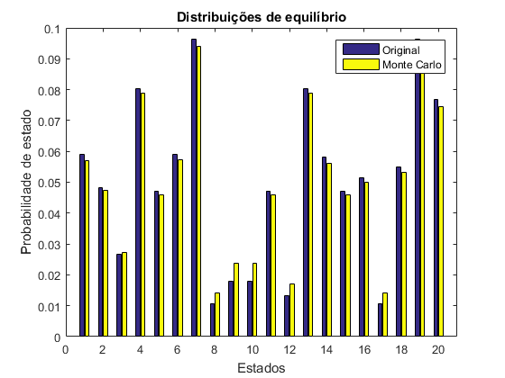 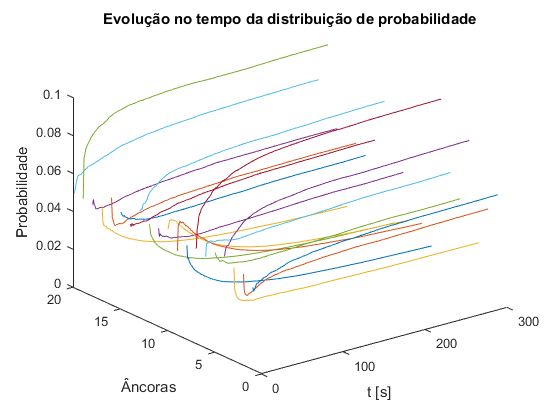 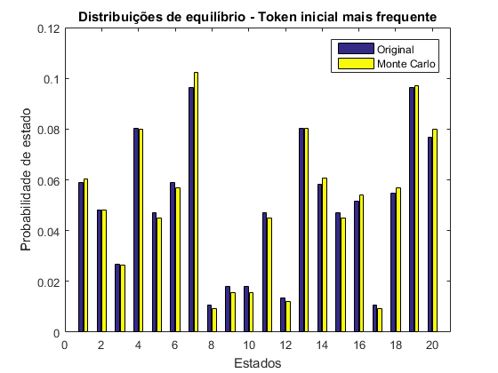 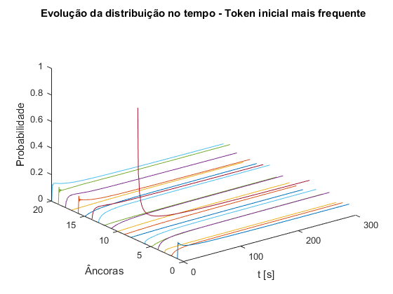 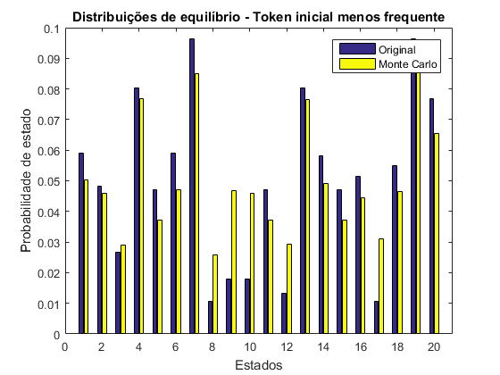 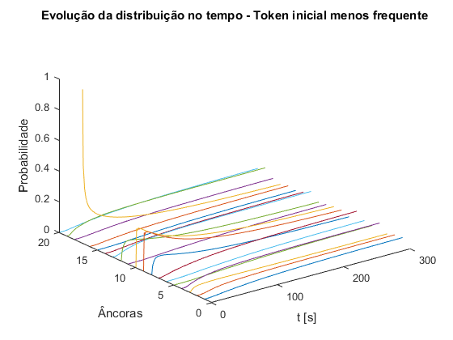
A partir da primeira figura, podemos confirmar que as distribuições de equilíbrio obtidas pelo método de Monte Carlo são próximas das determinadas na secção 2.
De forma semelhante à alínea 2.c), a partir do método de Monte Carlo, simulou-se a evolução das probabilidades dos diversos estados da cadeira de Markov ao longo do tempo para diferentes condições iniciais.
Pode-se observar que, quando o token começa num estado central, como o estado 7, este tem mais facilidade em rapidamente circular pela rede e atingir a probabilidade de equilíbrio, ou seja, tem um elevado ritmo de convergência. O mesmo não se verifica quando o token inicia numa zona que o retém, por exemplo, o estado 17. Neste caso, o ritmo de convergência é bastante inferior e as probabilidades de equilíbrio atingidas são diferentes das originais.
3.a) Ponto de vista da equipa/elemento hostil
clear load('MarkovChain.mat') P(6,1)=0.3; P(6,11)=0.45; P(6,15)=0.25; %Nó 6 P(15,20)=0.25; P(15,5)=0.40; P(15,6)=0.35; %Nó 15 P(1,6)=0.20; P(1,20)=0.25; P(1,7)=0.25; P(1,13)=0.30; %Nó 1 P(3,12)=0.4; P(3,19)=0.3; P(3,16)=0.3; %Nó 3 P(12,3)=0.30; P(12,10)=0.25; P(12,8)=0.45; %Nó 12 P(4,19)=0.4; P(4,13)=0.15; P(4,2)=0.45; %Nó 4 P(20,15)=0.35; P(20,1)=0.15; P(20,7)=0.15; P(20,14)=0.35; %Nó 20 P(13,1)=0.25; P(13,2)=0.35; P(13,4)=0.15; P(13,19)=0.25; %Nó 13 P(16,3)=0.25; P(16,7)=0.15; P(16,18)=0.6; %Nó 16 P(10,17)=0.45; P(10,12)=0.35; P(10,9)=0.2; %Nó 10 n_runs=5000; n_passos=300; estados_MC= simulacao_MonteCarlo(P,n_runs,n_passos,20,'a',0); estados_MC = cumsum(estados_MC); estados_MC_norm=zeros(n_passos, 20); for j=1:n_passos estados_MC_norm(j,:)=estados_MC(j,:)./sum(estados_MC(j,:)); end dist_estados=estados_MC_norm(n_passos,:); %repetição da alínea 2.a) [vect, val]= eig(P'); min= 900; for i=1:length(val) if(abs(val(i,i)-1))<min min=abs(val(i,i)-1); ind=i; end end Vp= vect(:,ind); soma_Vp= sum(Vp); Vp_normalizado = Vp/soma_Vp; Vp_normalizado_total = sum(Vp_normalizado); %Comparação das distribuições de equilíbrio figure; bar([Vp_normalizado dist_estados']); xlabel('Estados'); xlim([0 21]); ylabel('Probabilidade de estado'); title('Distribuições de equilíbrio - Grafo melhorado'); legend('Original','Monte Carlo'); %Evolução no tempo da distribuição t=1:n_passos; estados=repmat(1:20,length(t),1); figure; plot3(t,estados,estados_MC_norm); xlabel('t [s]'); ylabel('Âncoras'); zlabel('Probabilidade'); title('Evolução da distribuição no tempo - Grafo melhorado'); % 3.a) Ponto de vista de um elemento hostil clear P load('MarkovChain.mat') P(1,6)=0.8; P(1,20)=0.1; P(1,7)=0.1; P(6,1)=0.1; P(6,11)=0.45; P(6,15)=0.45; estados_MC= simulacao_MonteCarlo(P,n_runs,n_passos,20,'a',0); estados_MC = cumsum(estados_MC); estados_MC_norm=zeros(n_passos, 20); for j=1:n_passos estados_MC_norm(j,:)=estados_MC(j,:)./sum(estados_MC(j,:)); end dist_estados=estados_MC_norm(n_passos,:); %alínea 2.a) [vect, val]= eig(P'); min= 900; for i=1:length(val) if(abs(val(i,i)-1))<min min=abs(val(i,i)-1); ind=i; end end Vp= vect(:,ind); soma_Vp= sum(Vp); Vp_normalizado = Vp/soma_Vp; Vp_normalizado_total = sum(Vp_normalizado); %Comparação das distribuições de equilíbrio figure; bar([Vp_normalizado dist_estados']); xlabel('Estados'); xlim([0 21]); ylabel('Probabilidade de estado'); title('Distribuições de equilíbrio - Grafo hostil'); legend('Original','Monte Carlo'); %Evolução no tempo da distribuição figure; plot3(t,estados,estados_MC_norm); xlabel('t [s]'); ylabel('Âncoras'); zlabel('Probabilidade'); title('Evolução da distribuição no tempo - Grafo hostil');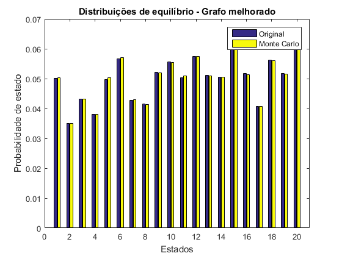 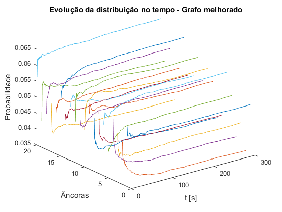 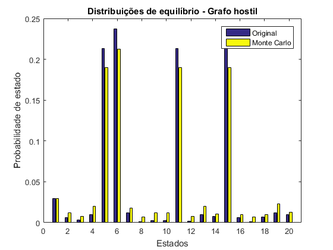 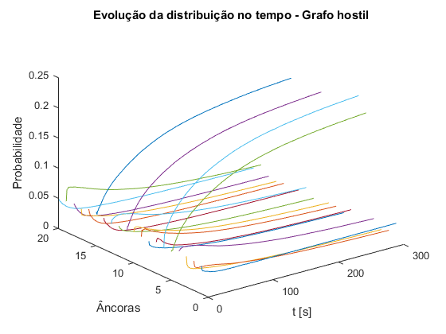
A partir do método de Monte Carlo (MC) também se simulou as variantes do grafo da alínea 2.d). Para a cadeia de Markov melhorada a distribuição de equilíbrio obtida é ainda mais próxima da original do que a determinada anteriormente, tal pode ser explicado pelo facto de nesta o vetor de probabilidade limite ser próximo de uma distribuiçao uniforme.
Relativamente aos ritmos de convergência, conclui-se que estes são mais lentos para o método de MC. Para a cadeia de Markov com pior circulação, é bastante mais lento pois nem chega a atingir a distribuição de equilíbrio dentro da janela de tempo.
Desta forma, pode-se concluir que o método de MC é bastante preciso para uma quantidade elevada de runs.
Questão 3.b)
Nesta questão, estimou-se o erro da posição da fonte ao longo do tempo a partir da função 'erro_MonteCarlo.m'. Esta constrói as matrizes A e b, resolve o problema de mínimos quadráticos a partir do algoritmo RLS e calcula o erro através da posição estimada da fonte em cada passo.
type('erro_MonteCarlo.m')
function [erro,x_pos,x_est]=erro_MonteCarlo(n_passos,n_runs,Po,variancia,nodePos,sourcePos,...
d,P,estado_inicial,mode,mode_mov,lambda)
erro=zeros(n_passos,1);
for i=1:n_runs
A=zeros(n_passos,4);
b=zeros(n_passos,1);
n=randn(n_passos,1)*sqrt(variancia);
x = sourcePos';
% Escolha do modo de uma condição inicial defenida ou random uniforme
if(mode=='c')
ancora=estado_inicial;
else
ancora=randi(20,1);
end
% Escolha do modo da fonte em movimento,'fonte_movimento', ou fonte
% parada e dependendo disso aplicar ou não o valor de Lambda
if strcmp(mode_mov,'fonte_movimento')
rlsPar=struct('lam',lambda);
else
rlsPar=struct('lam',1);
end
for j= 1:n_passos
%Verificar se a fonte está parada ou em movimento e dependendo
%disso mudar as coordenadas da fonte em cada passo
if strcmp(mode_mov,'fonte_movimento')
x=x+[-0.02;0.02];
end
Pi=(Po/(d(ancora))^2)*exp(n(j));
ai = nodePos(ancora,2:3)';
%construção matriz A e b
A(j,1)=-2*Pi*ai(1);
A(j,2)=-2*Pi*ai(2);
A(j,3)=-1;
A(j,4)=Pi;
b(j)=-Pi*(norm(ai))^2;
[~,w,rlsPar]=qrrls(A(j,:),b(j),rlsPar);
erro(j)=erro(j)+norm(x-w(1:2));
ancora = find(cumsum(P(ancora, :))>rand,1,'first');
end
hh=waitbar(i/n_runs);
end
close(hh);
end
clear close all load('MarkovChain.mat') n_passos=200; n_runs=800; Po=100; %Potência da fonte variancia=10^-2; estado_inicial=7; a=[nodePos(:,2),nodePos(:,3)]'; D=squareform(pdist([sourcePos' zeros(size(sourcePos')) a]')); d=D(1,3:end); %Fonte-âncora distância erro=erro_MonteCarlo(n_passos,n_runs,Po,variancia,nodePos,sourcePos,d,P,estado_inicial,'c','a',0); erro_med=erro./n_runs; t=1:n_passos; figure(1) plot(t, erro_med); hold on % Zona 1 longe da fonte estado_inicial=15; erro=erro_MonteCarlo(n_passos,n_runs,Po,variancia,nodePos,sourcePos,d,P,estado_inicial,'c','a',0); erro_med=erro./n_runs; t=1:n_passos; figure(1) plot(t, erro_med); hold on % Zona 2 perto da fonte estado_inicial=10; erro=erro_MonteCarlo(n_passos,n_runs,Po,variancia,nodePos,sourcePos,d,P,estado_inicial,'c','a',0); erro_med=erro./n_runs; t=1:n_passos; figure(1) plot(t, erro_med); xlabel('t [s]'); ylabel('Erro'); title('Erro de estimativa de posição da fonte'); legend('Posição Central','Zona 1 - Longe da Fonte', 'Zona 2 - Perto da fonte'); % Versão Melhorada P(6,1)=0.3; P(6,11)=0.45; P(6,15)=0.25; %Nó 6 P(15,20)=0.25; P(15,5)=0.40; P(15,6)=0.35; %Nó 15 P(1,6)=0.20; P(1,20)=0.25; P(1,7)=0.25; P(1,13)=0.30; %Nó 1 P(3,12)=0.4; P(3,19)=0.3; P(3,16)=0.3; %Nó 3 P(12,3)=0.30; P(12,10)=0.25; P(12,8)=0.45; %Nó 12 P(4,19)=0.4; P(4,13)=0.15; P(4,2)=0.45; %Nó 4 P(20,15)=0.35; P(20,1)=0.15; P(20,7)=0.15; P(20,14)=0.35; %Nó 20 P(13,1)=0.25; P(13,2)=0.35; P(13,4)=0.15; P(13,19)=0.25; %Nó 13 P(16,3)=0.25; P(16,7)=0.15; P(16,18)=0.6; %Nó 16 P(10,17)=0.45; P(10,12)=0.35; P(10,9)=0.2; %Nó 10 erro=erro_MonteCarlo(n_passos,n_runs,Po,variancia,nodePos,sourcePos,d,P,0,'a','a',0); erro_med=erro./n_runs; t=1:n_passos; figure(2) plot(t, erro_med); hold on % Versão Piorada clear P load('MarkovChain.mat'); P(1,6)=0.8; P(1,20)=0.1; P(1,7)=0.1; P(6,1)=0.1; P(6,11)=0.45; P(6,15)=0.45; erro=erro_MonteCarlo(n_passos,n_runs,Po,variancia,nodePos,sourcePos,d,P,0,'a','a',0); erro_med=erro./n_runs; t=1:n_passos; figure(2) plot(t, erro_med); xlabel('t [s]'); ylabel('Erro'); title('Erro de estimativa de posição da fonte'); legend('Melhor circulação','Pior circulação');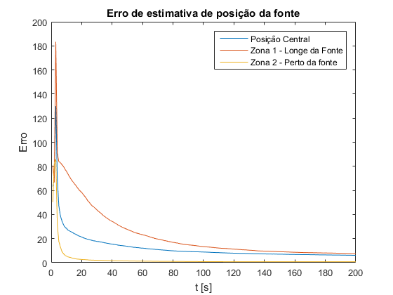 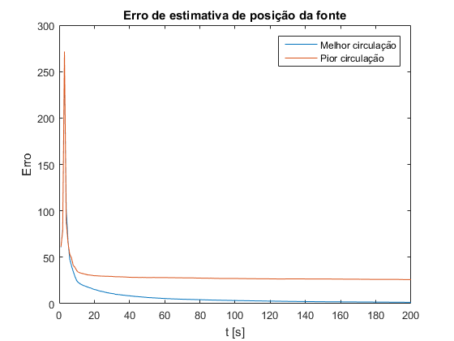
A partir dos gráficos obtidos, pode-se verificar, que quando se inicia o token numa posição central, por exemplo âncora 7, o erro diminui exponencialmente nos primeiros instantes. No entanto, neste caso, converge para um valor diferente de 0, ou seja a estimação da localização da fonte não é exata.
Do mesmo modo, determinou-se a situação em que se inicia o token no estado 15, que é uma âncora pertencente a um subconjunto de estados que tende a reter o mesmo e que se encontra longe da fonte. Como era de esperar neste caso, o erro leva mais tempo a aproximar-se da fonte, no entanto, converge aproximadamente para o mesmo valor que se verificou na situação anterior.
Por outro lado, quando se inicia o token na âncora 10, que também pertence a uma zona que tende a reter o mesmo, no entanto bastante mais próxima da fonte, este caso, relativamente às duas outras situações, é o mais rápido a convergir e converge para um erro=0.
A partir da segunda figura, concluímos que as variantes do grafo da alínea 2.d) influenciam a evolução do erro. Tal como era esperado, o grafo melhorado no sentido da equipa converge mais rapidamente para a posição exata da fonte, pois o token circula de forma eficaz por todo o grafo.
Para o grafo onde se dificulta a circulação do token, verifica-se que este converge para um erro bastante superior a 0, uma vez que não consegue chegar a todas as antenas, logo dificulta a estimativa exata da posição da fonte.
Questão 3.c)
Nesta alínea, a fonte movimenta-se em simultâneo com a transição do token. Desta forma, introduz-se um factor de esquecimente 0< 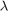 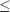 1 no algoritmo RLS, para que na função de custo se dê mais peso aos últimos termos do que os primeiros.
clear close all load('MarkovChain.mat') n_passos=1200; n_runs=300; Po=100; %Potência da fonte variancia=10^-2; lambda_set=[1 0.3 0.85]; a=[nodePos(:,2),nodePos(:,3)]'; D=squareform(pdist([sourcePos' zeros(size(sourcePos')) a]')); d=D(1,3:end); %Fonte-âncora distância for i=1:length(lambda_set) erro=erro_MonteCarlo(n_passos,n_runs,Po,variancia,nodePos,... sourcePos,d,P,0,'a','fonte_movimento',lambda_set(i)); erro_med=erro./n_runs; t=1:n_passos; figure(1) plot(t, erro_med); hold on end figure(1) xlabel('t [s]'); ylabel('Erro'); legend('\lambda=1','\lambda=0.3','\lambda=0.85'); title('Evolução do erro para uma fonte em movimento')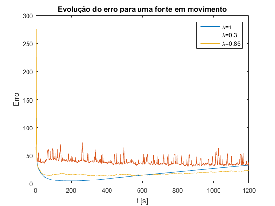
- Para =1, pode-se observar que o erro diminui exponencialmente numa primeira parte, chegando a 0 por uns instantes. No entanto, a partir de um certo número de transições começa a aumentar, devido ao factor de esquecimento dar o mesmo peso a todas as medições. Com a fonte em movimento, é necessário introduzir um de forma a dar-se mais peso às medições mais recentes em comparação com as antigas.
- Para um valor baixo de , por exemplo 0.3, o algoritmo dá importância apenas à última medição, praticamente ignorando as medições anteriores. Como se pode verificar, esta estratégia também não conduz a uma boa estimativa da fonte. É necessário encontrar um equilíbrio entre o peso das medições actuais e as anteriores.
- De seguida, testaram-se vários valores de de forma a encontrar um valor que melhor estimasse a posição da fonte para todas as transições, obtendo-se =0.85.
Por fim, é necessário ter em atenção que o erro pode ser maior ou menor tendo em conta a trajectória da fonte e se esta se aproxima ou afasta das antenas.